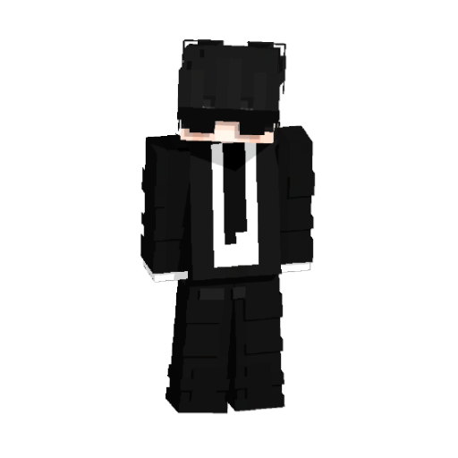

Staviam veci, ktoré musia bežať aj keď sa nikto nepozerá.
Šesť rokov spravujem Minecraft servery — od konfigurácie a výkonu až po
vlastné pluginy tam, kde hotové riešenie nestačilo. Posledný rok k tomu
pribudol Kotlin, backend a vlastný server, na ktorom to celé beží.
Na čom teraz robím
Minecraft
Začalo to jedným serverom v roku 2020. Odvtedy prešlo cez pozície
developera aj co-ownera, cez proxy siete, databázy a zálohovanie —
a nakoniec cez vlastný projekt postavený od nuly.

AstrakSK
Vývoj
Pluginy pre Paper, klientské módy pre Fabric, jedna Android aplikácia
a backend k nej. Väčšina vznikla preto, že som na daný problém nenašiel
riešenie, ktoré by robilo presne to, čo som potreboval.
Infraštruktúra
Vlastný VPS s Ubuntu, na ňom Docker a reverzná proxy, ktorá rozdeľuje
prevádzku medzi navzájom oddelené služby. Postavené a spravované celé mnou,
vrátane certifikátov, záloh a prístupov.
Ako to prevádzkujem
Siete
Sieťové základy zo školy a Cisco Networking Academy si overujem na vlastnej
infraštruktúre — adresovanie, smerovanie a DNS nie sú teória, keď od nich
závisí, či je server dostupný.
Škola
Študujem Informačné a sieťové technológie na SPŠE Zochova v Bratislave.
Škola dáva základ v elektrotechnike, sieťach a programovaní; zvyšok
dopĺňam vlastnými projektmi.